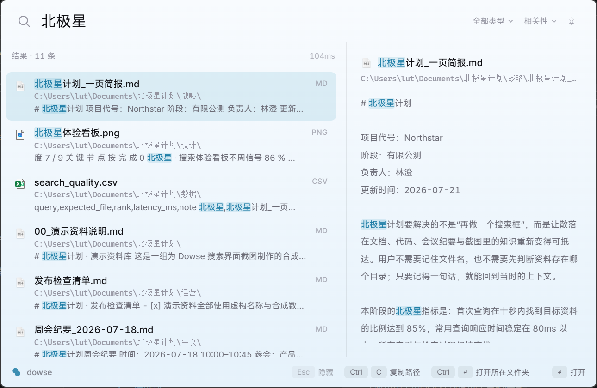

WINDOWS · 本地 · 开源
Dowse（问渠）是一款开源的 Windows 文件内容搜索工具：tantivy 倒排索引 + jieba 中文分词 + Windows 离线 OCR。索引住在你的硬盘上，答案也是——零网络请求。
Features
tantivy 倒排索引，PDF、Word、Excel、PowerPoint 和常见文本内容一并可搜——搜的是“里面写了什么”。
jieba 分词,按语义命中,不是按单字碰运气;长文档里的一句话也找得回来。
Windows 系统自带 OCR。报错截图、聊天截图,输入记忆里的那句话,图就回来了。
MFT 枚举 + USN Journal 增量更新,文件一变索引就知道,不做全盘重扫。
零网络请求,索引落在本地目录。开着防火墙监控看,它一句话也不往外说。
安装包预算 15MB,写进设计文档的约束:"超了就是 bug"。

Comparison
| 工具 | 主要搜索方式 | 适合的场景 | 关键区别 |
|---|---|---|---|
| Dowse | 文件名 + 持久化正文索引 + 图片 OCR | 经常搜索 PDF、Office、代码、中文资料和截图 | 开源、本地、中文分词、快捷键浮窗、只读 MCP |
| Everything | 文件名索引；内容查询时按需扫描 | 按名称瞬间定位文件，偶尔搜索少量文件内容 | 文件名搜索是标杆；大范围内容扫描不是它的核心索引路径 |
| Windows Search | 系统索引与 IFilter | 不安装第三方工具，在系统已索引位置查找 | 覆盖范围和格式受 Windows 索引设置、设备与过滤器影响 |
| dnGrep | 按需扫描、正则表达式 | 对指定目录做精确文本或正则搜索与替换 | 适合一次性检索；不是常驻的全盘内容索引浮窗 |
MCP Server
你的 AI 读过整个互联网,却读不到你的硬盘。dowse 内置只读 MCP server,Claude、Cursor 等客户端接入后,可以直接检索你索引过的本地文件。
listed on MCP Registry Glama (A) Smithery ModelScope
# Claude Code 一行接入 $ claude mcp add dowse -- dowse mcp # 任意 MCP 客户端 JSON 配置 { "mcpServers": { "dowse": { "command": "dowse", "args": ["mcp"] } } }
Install
Rust 1.85+。建索引、搜索、起 MCP server,都在一个命令里。
GUI 安装包或 cargo 装好后(0.8.3 起安装包自带 dowse 命令),建好索引,一行挂进 AI 客户端。
非 Windows 平台可编译安装,核心检索可用;NTFS 快速层与 OCR 自动降级停用。
FAQ
可以索引文件名、纯文本、Markdown、代码、PDF，以及 DOCX、XLSX、PPTX 等 Office Open XML 文档；Windows 上还能离线识别 PNG、JPG、WebP、BMP 图片里的文字。
不会。解析、索引、中文分词、OCR 和查询都在本机完成，没有遥测。隐私承诺与实现边界可以在公开源码和隐私说明中核对。
Everything 的强项是文件名索引，也提供按内容扫描；Dowse 为正文建立持久全文索引，并加入中文分词、图片 OCR、内容预览和 MCP，更适合频繁按“文件里写了什么”来查找。
不需要。普通权限下可以正常索引与搜索；NTFS 卷加管理员权限只是启用 MFT/USN 快速路径的可选加速条件。
可以。运行 dowse mcp 后，支持 MCP 的客户端可以使用三个只读工具搜索索引、读取命中上下文并查看索引状态。